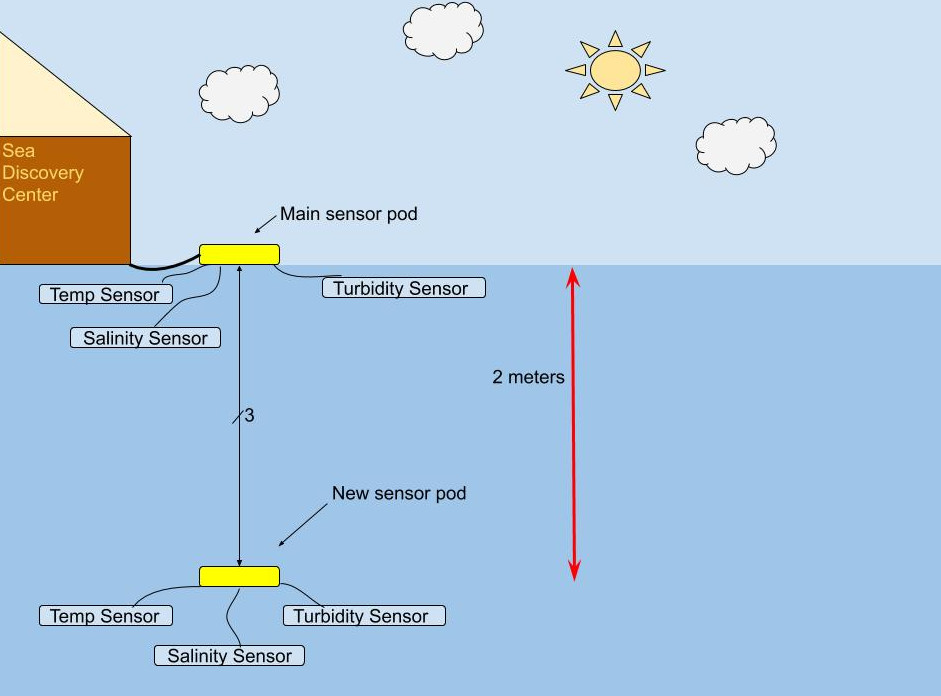
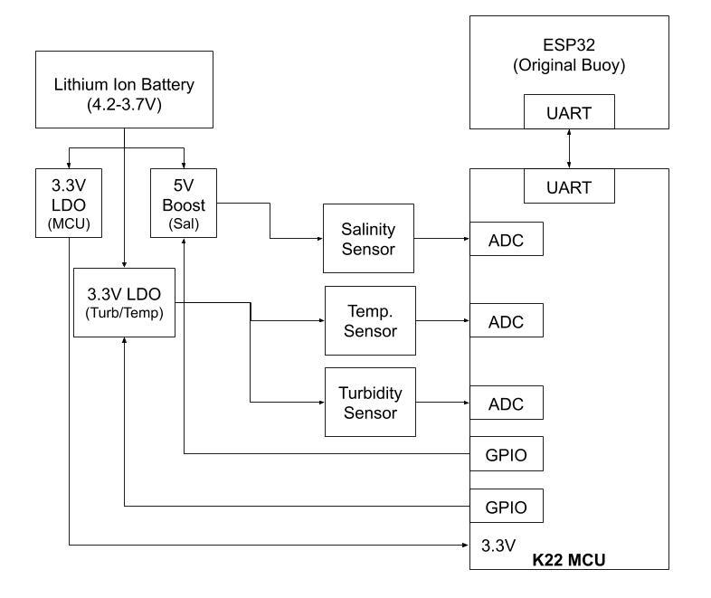
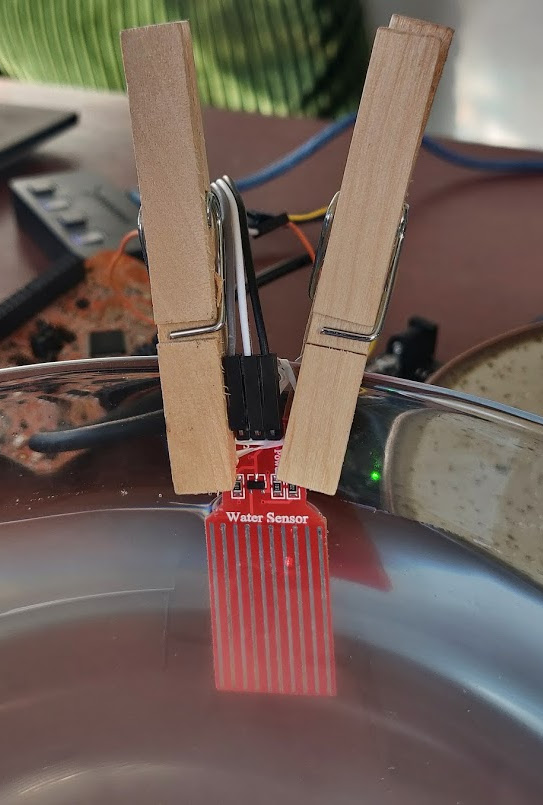

Sara Morimoto is attending Western Washington University on a Scott's Tots full ride, and will be graduating this fall with a BS in electrical engineering. She would like to thank her fellow EEs for the best four years a person could ask for, namely Daniel for all the car rides down to Seattle, and Bryce for the online dating profile tips. She hopes to inspire other young women to pursue engineering, so long as therapy is covered by their healthcare provider. She plans to move back to the northwest after this whole "virus" thing blows over, so she can go back to buying coffee she can't afford.
The following is a breakdown of my senior capstone. (The system requirements have been altered a lot due to the current circumstances). As you peruse this page, pretend things are normal and we didn’t just spend the last 3 months baking bread and shaving our heads.
Capstone: Water Weather Station
(Buoy-ya!)
Background
Computer Science professors at Western Washington University along with
directors at the Sea Discovery Center in Poulsbo, WA have created a
Cyber Security Summer Camp for middle school teachers and students at
the WWU Poulsbo Campus.
At the camp, the students and teachers are taught two main lessons on
cyber security. The first lesson compares the way we protect ourselves
in cyber with how sea creatures protect themselves (layers, hardened
outer shells, disguises, etc.).
The second lesson is a tad more involved. The camp directors wanted a
project that would demonstrate cyber security in action while doing some
useful marine science. The project they came up with is the
Water Weather Station. This project implements multiple sensors
on a buoy that collect environmental data. A mobile app created by WWU
CS students retrieves the data, and sends the data to a web server which
stores and displays the collected data on a website for the Sea
Discovery Center.
The project lets teachers and students do hands on science, and makes
useful examples of cyber security in action using passwords, encryption,
separation of authorizations, etc. Because the students have already
looked at these areas of security in the camp, seeing them in actual use
gives them that “ah-ha” moment as they understand the context.
Existing Solutions
As part of the camp, the Sea Discovery Center explains the importance of
taking measurements, particularly the blending of fresh and salt water
in estuaries and how that affects marine life. This includes important
factors such as salinity, temperature, turbidity and isolation. (Turbidity is a measurement of how cloudy or hazy a fluid is). At the camp,
students get hands-on practice using a variety of instruments, from
simple tools like secchi disks and standard thermometers, to complex
tools like a $10,000 salinity machine. All of the tools are single use,
where someone takes measurements and records them 2-3 times per day.
This gives the students an appreciation for the capabilities of the
buoy.

Figure 1: New two buoy system
They were having issues with waterproofing the fully submerged sensor
array, as the sensors they were using were thru-hole components on a
breadboard dipped in epoxy. The purpose of my project was to implement
the new sensor pod, and design PCBs for each sensor, making them
much smaller and easier to waterproof.
User Needs
The new sensor pod would be controlled by a separate MCU (the brains of
the pods) that would collect data measurements upon the main buoy’s
request, and send the recorded data back to the main buoy.
System Requirements
The sensor array pod must communicate with the main buoy microcontroller (ESP32)
The pod shall measure the turbidity, salinity and temperature of the water
The pod shall measure the turbidity, salinity and temperature of the water and report the data upon the main buoy's request
The pod shall average and report measured data upon the main buoy's request
The pod shall send the measured data and receive requests through UART
The pod must fit in a 12 oz water bottle (8x4x1.5 inches) and stay tethered to the main buoy
The pod shall sink 2 meters below the surface of the water
The pod shall be able to stay tethered to the main buoy in the event of swells
The pod shall be water resistant in accordance with the IP68 standard
The pod's dimensions shall be smaller than 8x4x1.5 inches
The pod's mcu shall enter low power mode when sensors are not in use
The pod's mcu shall enter low power mode (less than 3% of power consumed during normal operation)
The pod shall have a voltage regulator for each sensor's input voltage (3.3 V)
The pod shall be able to supply a maximum current of 30mA to the sensors
The pod's maximum delay from delivery of data shall be less than 30ms
The pod shall be able to process and average data from sensors with .25% accuracy
The total cost shall be under $150
Hardware Design
The three sensors had already been chosen for me, which made the design process straightforward.
When my MCU (Kinetis K22) receives a request to start a data collection sequence from the Buoy, it exits Low Power Mode and uses GPIO pins to enable the LDOs and boost converter that power the 3 sensors. The three sensors’ outputs get sampled and averaged by an ADC Module on my MCU.
Compared to the single-use sensors previously mentioned, this buoy/pod pair is about 1/100th of the cost, if you consider the salinity machine. The main draw, however, is the fact that the pair save a person multiple data collection trips a day.

Figure 2: System-level block diagram
Technical Details
Temperature Sensor
The temperature sensor is a TMP36, which provides an output voltage that's linearly proportional to the Celsius temperature.
Salinity Sensor
We are using a water level sensor that, if fully submerged, can be used to measure the salinity of the water, as conductivity changes with salinity.
The salinity of the Pacific Ocean can vary from 34 ppt to 37 ppt, but the average salinity of the Puget Sound is 29 ppt. To allow for the buoys to be used in multiple locations, we mapped ADC readings from water samples with salinities ranging from 27 to 37 ppt. We worked backwards to find a range of ADC measurements that correspond to a specific salinity measurement. We started our mapping process with 1 mL of water combined with 27 grams of salt, and recorded 5 ADC readings, then continued this process by incrementing the amount of salt by 1 gram until we reached 37 grams. As expected, there was a distinct range in ADC readings for each salinity concentration. (Ideally, we would've instead borrowed a refractometer from the marine biology department at Western to compare its output with our ADC readings, but the pandemic forced us to get creative).

Turbidity Sensor
Originally we were going to use a turbidity sensor that is used in washing machines and dishwashers, however we decided to design our own using an IR LED and a photodiode. As you can see from Figure 4 below, when there is nothing between the LED and photodiode, the indicating blue LED for protyping is off (and the ADC will read 0V).